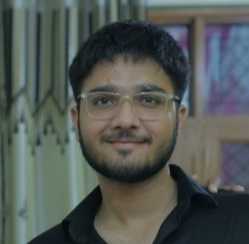

Vinit Tanwar

Summary
Motivated engineering student with strong technical skills and a passion for problem-solving.
Education
Bachelor of Technology
Delhi Technological University(2020-2024)
Work Experience
Manager at Pallav Academy
- Team Leadership: Successfully managed and motivated a team of educators, fostering a collaborative environment to ensure high teaching standards and student satisfaction.
- Operational Efficiency: Implemented streamlined processes to optimize resource utilization and scheduling, enhancing the overall efficiency of the coaching center.
- Student Success Focus: Monitored student progress and implemented targeted strategies to improve academic performance, resulting in measurable improvements and increased parent satisfaction.
Intern at Bharat Gears Pvt. Ltd.
- Internship Experience: Gained valuable hands-on experience at Bharat Gears, learning about the production processes involved in gear manufacturing.
- Process Familiarity: Developed a comprehensive understanding of the various stages and techniques utilized in gear production during the internship at Bharat Gears.
- Industry Exposure: Acquired practical knowledge of gear manufacturing processes through immersion in the operations of a prominent company, contributing to a strong foundation in the field.
PaperCafe
- Entrepreneurial Experience: Founded and operated PaperCafe, a successful academic assistance company that streamlined data collection and delivered timely academic support to students.
- Efficient Data Management: Implemented data collection processes to gather relevant information for student assistance, ensuring quick and accurate service delivery.
- Academic Support: Provided comprehensive academic assistance to students, supporting their curriculum needs and helping them achieve their educational goals.
Skills
- Python
- Digital Marketing
- Web Development
- Organizational Skills
- MS Office
- Problem Solving Abilities
- Teamwork and Communication
Contact Me